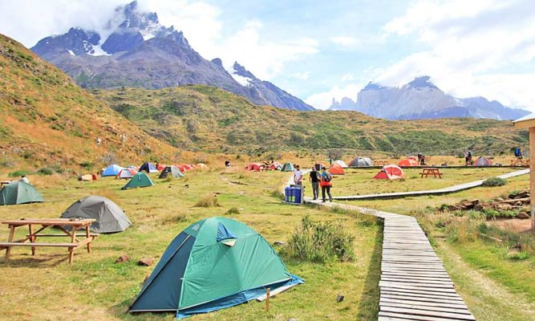

Viajando al Sur
eventjunio 15 2017 location_onRegion de la Patagonia, CHL
El parque nacional Torres del Paine es un lugar es conocido por sus altas montañas, los témpanos de azul brillante que se aferran a los glaciares y las pampas doradas
Llegar al Parque nacional se siente un atmosfera de tranquilidad y se puede apreciar las bellezas naturales de nos ofrece nuestro planeta.
Definitivamente volvería a visitar esos hermosos lugares que son tan impresionantes y relajantes.
Sobre el autor
Mi nombre es Henry González Reyes, chileno, ex-miembre de las fuerzas armadas de chile y amante de la naturaleza
En mis tiempos libres me gusta ver lugares pacificos que nos otorga la naturaleza
Los invito a compartir sobre sus experiencias en viajes, por medio de este Blog
Dejandolos invitados a venir a Chile y disfrutra sus diversos entornos que ofrece